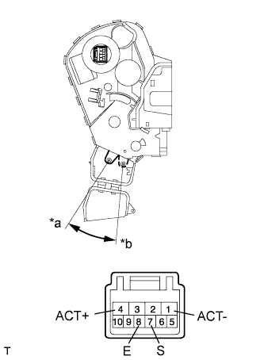

BACK DOOR LOCK > INSPECTION |
| 1. INSPECT BACK DOOR LOCK ASSEMBLY |
|  |
Apply battery voltage to the door lock motor and check the operation of the door lock motor.
| Measurement Condition | Specified Condition |
| Battery positive (+) → 4 (ACT+) Battery negative (-) → 1 (ACT-) | Lock |
| Battery positive (+) → 1 (ACT-) Battery negative (-) → 4 (ACT+) | Unlock |
Measure the resistance of the door lock position switch.
| Tester Connection | Switch Condition | Specified Condition |
| 7 (S) - 8 (E) | Lock | 10 kΩ or higher |
| 7 (S) - 8 (E) | Unlock | Below 1 Ω |
| *a | Unlock |
| *b | Lock |